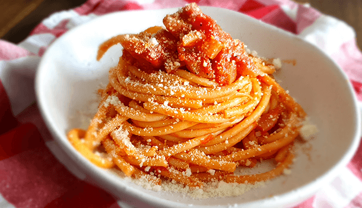

Amatriciana
Description:
A classic roman pasta dish made with delicious, yet ingredients.
Credit to https://www.vincenzosplate.com/amatriciana-recipe/

Ingredients
- >250g/8.8oz Bucatini Pasta (for 2 people)
- 75g/2.6oz Guanciale /Pig cheek (Per person once skin is removed)
- Subsitute options: Pancetta, salami – not bacon!
- 1 can/400g/14.1oz peeled tomatoes
- Salt & Pepper
- 5L water
Directions
- This amatriciana recipe starts with the guanciale! Cut it into strips, and then again into cubes, making sure to keep some of the fat on as this helps it remain juicy and tender.
- Next, it’s time to use Nonna’s favourite utensil for squashing peeled tomatoes…a fork! Pour the tomatoes into a bowl and squash them down, mixing as you go.
- Boil approx. 5L water in a large pot and once it boils, add a handful of rock salt.
- Put a pan on your stove at a low-medium heat and add the guanciale – no oil! Leave this to slowly cook and crisp in the pan, gently moving it around with a wooden spoon every so often.
- Once the guanciale has started to crisp and change colour, this amatriciana recipe calls for white wine! Add one glass and mix through.
- After 3 minutes, most of the wine will have evaporated, mix again and add the peeled tomatoes.
- Use your wooden spoon to stir through and leave to simmer for 10-15minutes. If your stove is too strong, just lower it so it cooks more gently.
- While this amatriciana recipe sauce is simmering, add a touch of salt and be generous with pepper.
- Once the sauce has reduced, switch off the stove and cook your pasta al dente (according to packet instructions).
- Remove the pasta from the pot, and add it to the pan, making sure some of the pasta water is added in too. Then add 5 extra tablespoons of pasta water and mix the sauce through the pan really well.